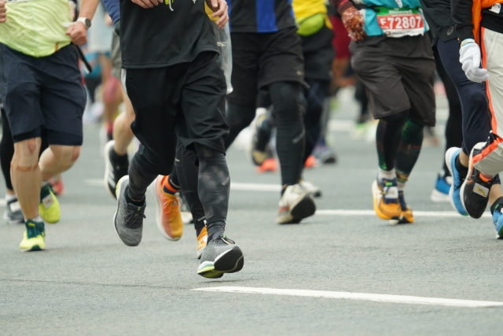

イベント情報
大府シティ健康マラソン大会開催決定!

申込期間は8月9日（金曜日）正午から9月8日（日曜日）23時59分までです。
中学生以下は申込みができません。窓口での申込みをお願いします。
大会名称
第38回2024大府シティ健康マラソン大会
開催期日
2024年11月10日（日曜日）10時00分スタート（部門別に順次スタート）※雨天決行
会場
大府市立石ヶ瀬小学校グラウンド（主会場）、市道大府共和線ほか（大会コース）
参加定員
5,000名（定員となり次第、募集を締め切ります）